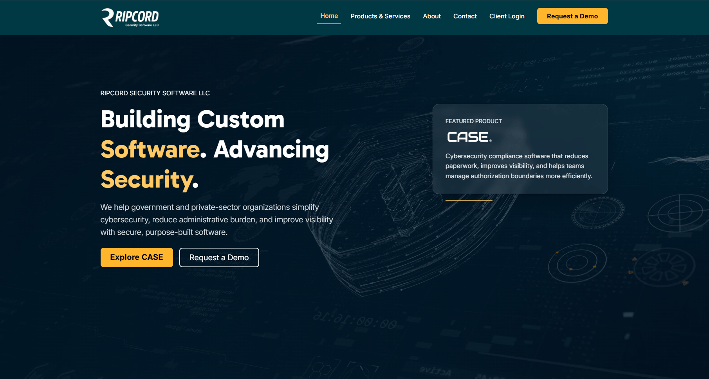

Problem
Business problem
The organization did not have a functional website to represent the company online. They needed a professional digital presence that clearly explained their services, introduced their software product, established credibility, and gave potential clients a clear path to request more information.

Role
My contribution
I planned, designed, and developed the company website from the ground up. My work included organizing the content structure, designing the visual direction, developing responsive page layouts, creating clear calls to action, and building a site that could support future business development.
Execution
Key contributions
- Created a functional company website where one did not previously exist.
- Designed the homepage experience around the company's value proposition.
- Built responsive page layouts for desktop and mobile users.
- Structured content around products, services, company credibility, and demo requests.
- Created clear navigation and calls to action for potential clients.
- Balanced visual design, usability, and maintainable front-end implementation.
Design Strategy
Design and development strategy
I treated the website as both a marketing tool and a trust-building experience. The homepage needed to communicate quickly: what the company does, who it serves, and what action a visitor should take next. Large typography, clear navigation, product-focused messaging, and strong calls to action were used to guide users toward exploring the software or requesting a demonstration.
Technical Highlights
Technical environment
- HTML, CSS, and JavaScript for front-end development.
- Responsive layout structure for desktop and mobile views.
- Content architecture for products, services, about, contact, and client login paths.
- Reusable visual patterns for buttons, sections, cards, and navigation.
- Business-focused calls to action supporting demo requests and client engagement.
Result
Outcome
The completed website gave the company a professional online presence and a functional platform for communicating its software, services, and business value. It helped establish credibility, supported client engagement, and created a stronger foundation for future marketing, product communication, and business development.
Reflection
What I learned
This project reinforced how important clarity, structure, and trust are in business-facing web development. A company website is often the first experience a potential client has with a product, so the design and content need to communicate value quickly while making the next step obvious.